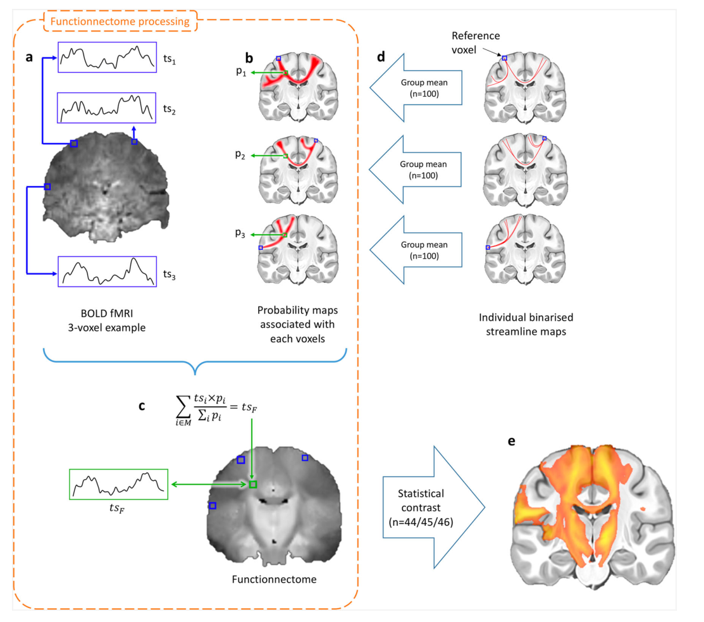
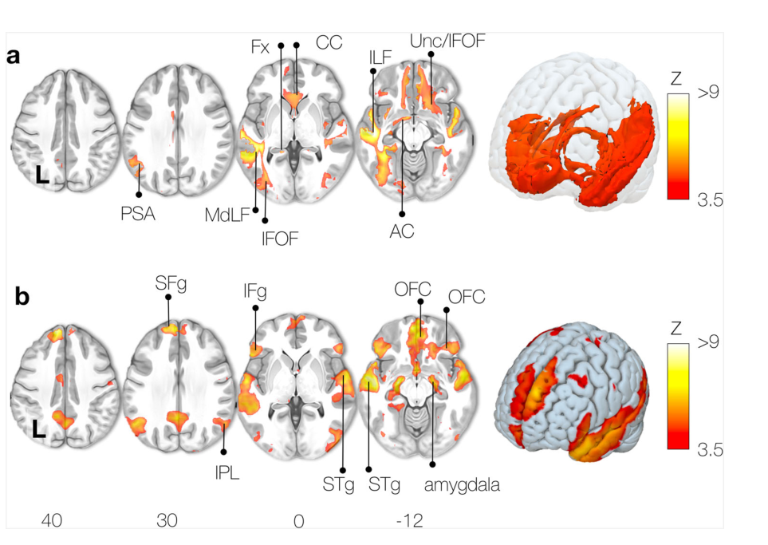
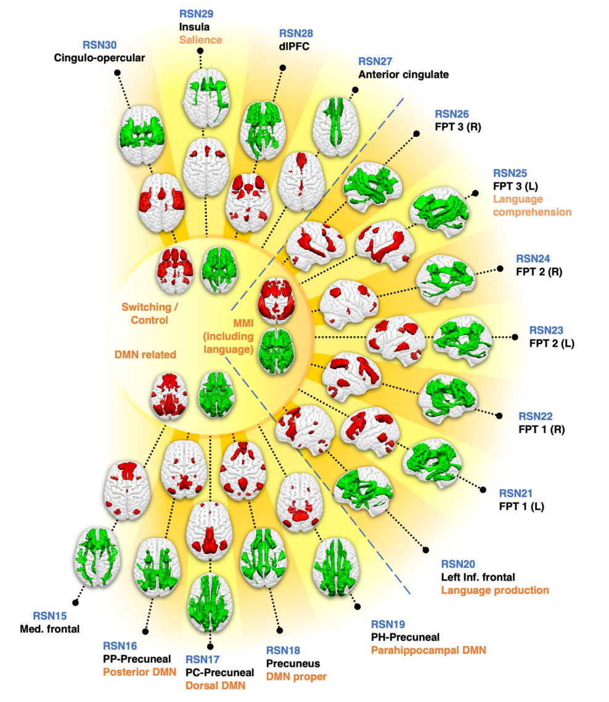
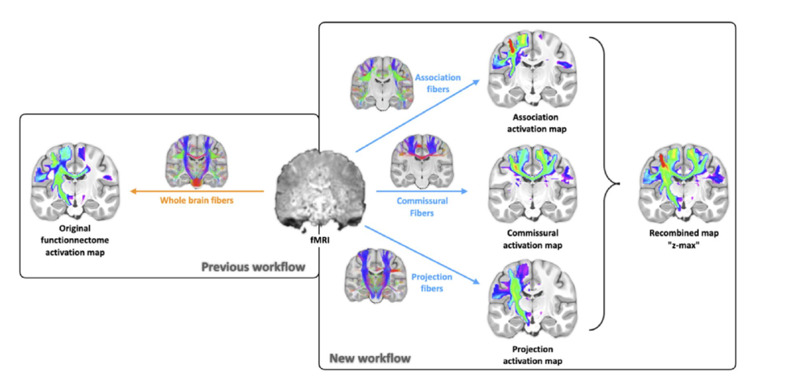
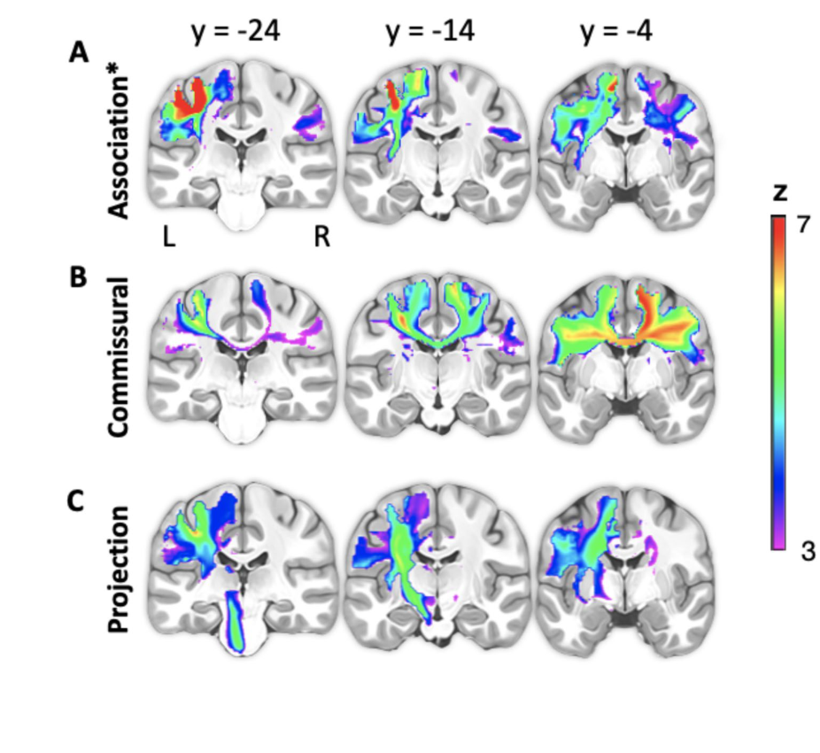

What if fMRI could reveal the circuits behind brain function?
Classical fMRI identifies cortical regions involved in a task, but does not directly reveal the anatomical circuits linking them.
Functionnectome combines fMRI with tractography-derived structural connectivity priors. Functional signals originating in grey matter are projected onto white-matter pathways according to their probability of anatomical connection, producing a functional volume that can be analysed with standard fMRI statistics.
A structural-functional framework
From cortical BOLD signals to functional white-matter maps.

Fig. 2 | Experimental setup of the Functionnectome. Functional MRI signals are combined with anatomical priors derived from high-resolution diffusion tractography, then analysed in the same statistical framework as classical fMRI. Nozais et al., Communications Biology (2021).
Functionnectome in action
From cortical activations to functional circuits.
The framework complements classical fMRI by revealing the anatomical circuitry jointly supporting distributed cortical activations.
In the founding study, Functionnectome was applied to motor, working-memory and semantic tasks, making it possible to map the white-matter pathways associated with these cognitive systems in the healthy human brain.

Semantic processing: Functionnectome-derived white-matter circuit map compared with classical fMRI. Nozais et al., Communications Biology (2021), Fig. 6.
From tasks to the resting brain
WhiteRest maps resting-state networks in both grey and white matter.
The 2023 extension applies the Functionnectome framework to resting-state fMRI and produces an atlas of 30 resting-state networks with paired grey- and white-matter maps.

Fig. 2 | WhiteRest resting-state atlas. Paired maps show grey-matter functional components and their associated white-matter circuitry across switching/control, information-maintenance and default-mode related networks. Nozais et al., Communications Biology (2023).
Improving the framework
Untangling white-matter function.
The improved Functionnectome addresses three sources of ambiguity: imperfect streamline endings at the grey-white interface, crossing-fiber regions, and overlap between different classes of white-matter pathways.

Improved Functionnectome | Graphical abstract. Whole-brain structural priors are separated into association, commissural and projection classes before functional mapping, allowing the resulting maps to be interpreted by fiber class. Nozais et al., Brain Structure and Function (2023).
The same strategy also subdivides association fibers by length, helping reduce mixing in crossing regions and clarifying the architecture of the functional network under study.
Anatomical specificity
Different fiber classes can be examined separately.

Association, commissural and projection components of the right-hand finger-tapping Functionnectome. Nozais et al., Brain Structure and Function (2023), Fig. 7.
Et si l’IRMf pouvait révéler les circuits qui sous-tendent la fonction cérébrale ?
L’IRMf classique identifie les régions corticales impliquées dans une tâche, mais ne révèle pas directement les circuits anatomiques qui les relient.
Functionnectome combine l’IRMf avec des priors de connectivité structurale issus de la tractographie. Les signaux fonctionnels de la matière grise sont projetés sur les voies de substance blanche selon leur probabilité de connexion anatomique, produisant un volume fonctionnel analysable avec les outils statistiques classiques de l’IRMf.
Un cadre structure-fonction
Du signal BOLD cortical aux cartes fonctionnelles de substance blanche.
Fig. 2 | Principe expérimental du Functionnectome. Les signaux IRMf sont combinés à des priors anatomiques issus d’une tractographie de diffusion à haute résolution, puis analysés dans le même cadre statistique qu’une IRMf classique. Nozais et al., Communications Biology (2021).
Functionnectome en action
Des activations corticales aux circuits fonctionnels.
Le cadre complète l’IRMf classique en révélant les circuits anatomiques qui sous-tendent conjointement des activations corticales distribuées.
L’étude fondatrice applique Functionnectome à des tâches motrices, de mémoire de travail et de traitement sémantique et permet de cartographier les voies de substance blanche associées à ces systèmes cognitifs chez l’être humain sain.
Traitement sémantique : carte de circuits de substance blanche dérivée du Functionnectome comparée à l’IRMf classique. Nozais et al., Communications Biology (2021), Fig. 6.
Des tâches au cerveau au repos
WhiteRest cartographie les réseaux de repos dans la matière grise et la substance blanche.
L’extension de 2023 applique Functionnectome à l’IRMf de repos et produit un atlas de 30 réseaux, chacun associé à une carte de matière grise et à sa cartographie de substance blanche.
Fig. 2 | Atlas WhiteRest des réseaux de repos. Les cartes appariées montrent les composantes fonctionnelles de matière grise et les circuits de substance blanche associés pour les réseaux de contrôle, de maintien/manipulation de l’information et du mode par défaut. Nozais et al., Communications Biology (2023).
Améliorer le cadre
Démêler la fonction de la substance blanche.
L’Improved Functionnectome traite trois sources d’ambiguïté : les terminaisons imparfaites des streamlines à l’interface substance blanche–matière grise, les régions de croisements de fibres et la superposition de différentes classes de voies.
Improved Functionnectome | Graphical abstract. Les priors structuraux sont séparés en fibres d’association, commissurales et de projection avant la cartographie fonctionnelle, permettant d’interpréter les cartes résultantes selon la classe de fibres. Nozais et al., Brain Structure and Function (2023).
La stratégie subdivise aussi les fibres d’association selon leur longueur, afin de réduire le mélange des signaux dans les régions de croisements et de mieux décrire l’architecture du réseau fonctionnel étudié.
Spécificité anatomique
Les différentes classes de fibres peuvent être examinées séparément.
Composantes d’association, commissurales et de projection du Functionnectome lors d’une tâche motrice de la main droite. Nozais et al., Brain Structure and Function (2023), Fig. 7.